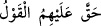
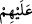
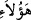
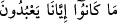
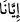
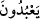

Bazı tefsir ehli demiştir ki: “
” ifâdesinin mânâsı; “Bunun gereği sabit
oldu, edâsı gerçekleşti” demektir. Bu da Allah Teâlâ’nın “Mutlaka cehennemi,
cinlerden ve insanlardan bir kısmıyla tamamen dolduracağım” (Hûd, 11/119) ve
diğer vaîd içeren âyetleridir. “
” deki “ (onlar)” zamiriyle kasdedilen; şeytanların
ortakları yahud da her emir ve yasaklarına itâat etmek suretiyle Allah’dan başka rabler
(ilahlar) edinen liderleridir. Bu hükmün, tâbilerini ve etbâını kapsasa da özellikle bu
liderlere tahsis edilmesi, onların küfürde kökleşmeleri ve azâbı hak etmelerinden
dolayıdır.
Soru, putlara tapanların hepsine yönelik olmakla beraber liderlerin cevapta acele
etmeleri; hakarete maruz kaldıkları, başkalarını saptırmakla suçlandıkları ve kendilerine
uyanların “bunlar bizi saptırdı” sözlerinden sorunun kendilerine yönelik olduğunu
anladıkları içindir.
“Rabbimiz! Şunlar azdırdığımız kimselerdir.” Rabbimiz, şu Âdemoğullarından kâfir
olanlar, yahut liderlere uyanlar, onların peşi sıra gidenler; bizim saptırdıklarımızdır.
Bu cümlede ism-i mevsûle râcî olan “ ” zamiri hazfedilmiştir. İşâret zamiri olan “
(işte onlar)” ile bu konuşmanın onların huzurunda cereyan ettiği ve bunu red ve
inkâra güçlerinin yetmediği anlatılmak istenmiştir.
“Biz nasıl azmışsak onları da öylece azdırdık”
Hakiki cevab budur; önceki cümle buna bir hazırlıktır. Yani, biz onları sapıtmağa
zorlamadık. Biz onları vesvese ve güzel gösterme yoluyla saptırdık. Güç yetirememe
veya zorlama yoluyla değil.
et-Te’vîlâtü’n-Necmiyye’de der ki: Biz onları Senin takdirinle saptırdık; Zira bize ve
onlara sapıklık ve dalâleti hükmetmen sebebiyle sapıttık. Âdemoğlunun özelliklerinden
biri de “Biz Âdemoğullarını mükerrem kıldık” âyetinin delâlet ettiği üzere mükerrem
bir surette yaratılmasıdır. Bu nedenle, Âdemoğulları Allah ile edebini her an muhâfaza
ederler. Nitekim veliler de kurbiyet kilimi üzerinde terbiye görmüşlerdir. Onlar İblisin
dediği gibi “Bizi saptırdığın gibi biz de onları saptırdık” demezler. İblis bu sözü açıkça
söylemiş ve Allah ile olan edebini muhâfaza edememiştir: “İblis dedi ki: Öyle ise beni
azdırmana karşılık, and içerim ki, ben de onları saptırmak için senin doğru
yolunun üstüne oturacağım.” (el-A’raf, 7/16)
“(Yoksa onları zorlayan bir gücümüz yoktu. Onların suçlarından) berî olduğumuzu
sana arzederiz.” Biz onları terkedip sana ilticâ ettik. Onların kendi hevâlarına göre
işledikleri günah ve masiyetlerden de uzağız. Bu cümle, öncekinin takriridir; bu yüzden
ona atfedilmemiştir. Sonraki “
(Zaten onlar aslında bize tapmıyorlardı
(kendi arzularına tapıyorlardı)” cümlesi de böyledir.
“Zaten onlar aslında bize tapmıyorlardı (kendi arzularına tapıyorlardı), derler.”
cümlesindeki “
(bize)” ifâdesi “
(ibâdet ederler, taparlar)” fiilinin mef’ûlüdür.
Yani, onlar bize ibâdet etmiyorlardı; heva ve arzularına tapıp şehvetlerine uyuyorlardı.